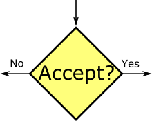

When this kind of search and matching problem is given in a prelim, the problem description often allows for several ambiguities in timing, which led to confusion when studying other people's solutions. I found that graphically representing the entire process was helpful for making my assumptions about timing clear and consisten, and for understanding what assumptions other people made.
The notation I used differs from standardized Flow Chart notation in a few ways, as described below.
| Object | Description |
|---|---|
| Period Boundary Node: Time advances to next period. Discounting happens across these nodes. |
|
| Income Node: Agent recieves income x, in terms of units of current period consumption. In simple search models, we can assume that the agent immediately consumes this income. |
|
|  | Choice Node: The agent makes a decision based on the current state variables. Most of the work in these problems comes from characterizing these nodes and essentially reducing them to chance nodes. |
| Chance Node: A random event occurs. Branchs are labelled with the probability of each outcome. |
|
| Process Node: The state variables are updated in some way not covered by the above. For example, a variable might be randomly redrawn, or reduced by 1. |
|
| Present Value Label: This is not a node. It is a label for the present value in the state marked by the dot. Present value labels can either be singular or a function of state variables. \(V^X_Y(Z)\) is the present value at state \(S^X_Y(Z)\) |